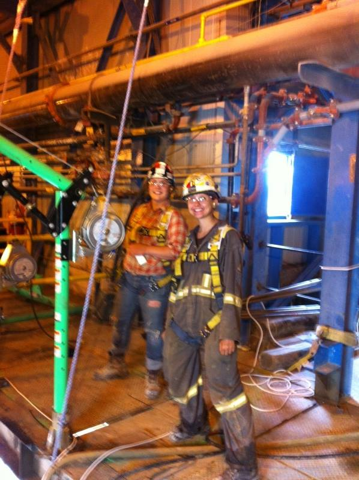
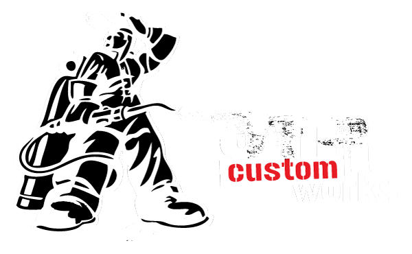

Visual Direction
Cleaner, darker, stronger industrial feel without losing field credibility.



Case Study
This concept project reworked an industrial services website into a cleaner, more modern, more trade-credible experience. The focus was not flashy agency styling. It was clarity, trust, and making a Timmins-based industrial company feel strong on the web.
Project Snapshot

What HBK Changed
Why It Matters
Visual Direction

HBK Angle
HBK is not pitching trades from the outside. This case study is a good example of the actual niche: take a welding, industrial, or contractor business with strong real-world capability and turn it into a site that earns more trust, looks more current, and helps qualify better leads.